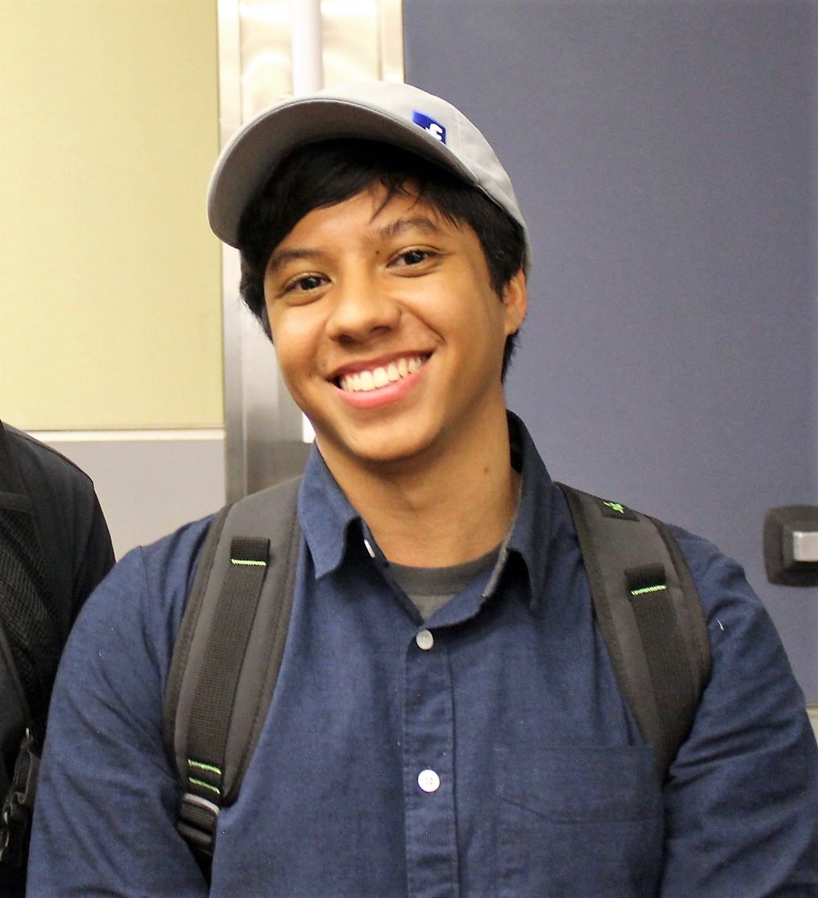

About Me

Bio
I graduated with a B.S. in Computer Science and a minor in Mathematics. I'm passionate about quantitative science and technology development. I'm a software engineer with experience in object-oriented programming, full-stack application development, statistical analysis, database systems, cybersecurity, and Agile project management.
Let's get in touch!
Email: brandonmchin21@gmail.com
Node Capital
Software Engineer
Feb 2018 - Present
Develop automated tools and application software for asset management in cryptocurrency trading and analytics.
CodePath
Technical Program Manager / Teaching Assistant
Jan 2017 - Dec 2017
Led sessions teaching university students application & network security, encryption, and common web vulnerabilities.
Con Edison
Intern/Co-op, Services & Work Resource Management
Jun 2016 - Jun 2017
Built KPI reports and visualizations to track internal performance and prioritize business and informational needs.